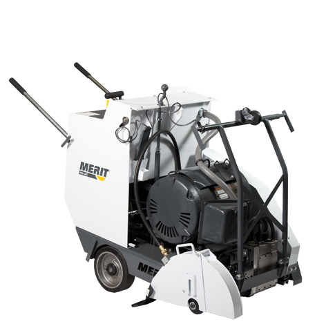
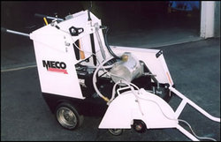
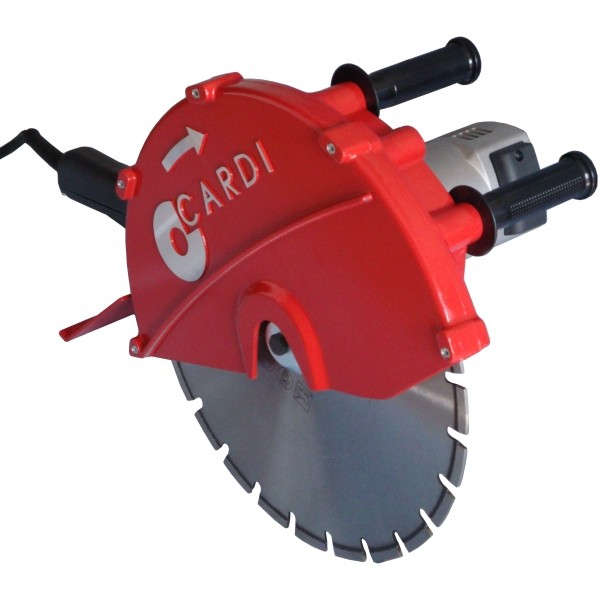
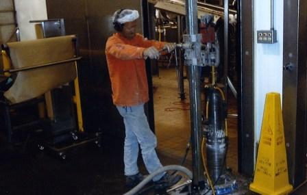
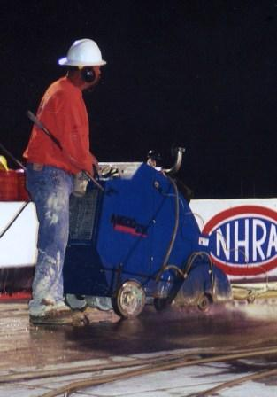
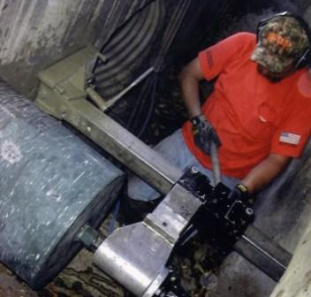
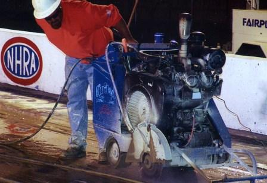

Serving Orange, Riverside, San Bernardino, Ventura, San Diego & Los Angeles counties
United services residential, commercial & industrial clients across Southern California. From the smallest residential job to the largest industrial project, we are ready when you are.
For indoor jobs where carbon monoxide may be an issue. Our 480 volt, 3 phase, 30 horsepower production saw is state of the art and can reach up to 15" of depth. We also have a 10 horsepower electric push saw for restrooms and confined areas, plus an electric hand saw.



Core drilling is performed when precise, circular diameter cuts are needed. Holes up to 24" in diameter can be drilled to virtually any depth. Core drilling is used for plumbing, electrical and HVAC installations. Core drilling can be done in steel reinforced concrete slabs, walls, brick, block or even stone.

Flat sawing is the most common diamond cutting method used today. Usually used to cut horizontal flat surfaces such as floors, paved areas, bridge decks and any hard surface made from concrete or asphalt. United Concrete provides flat sawing services for all industries and applications up to 15" in depth.

United can core drill into concrete structures such as storm drains, catch basins and sewers. We drill in any location and at any depth needed to complete your project on time.

Asphalt cutting is usually done for pipeline trenches or to remove and replace bad or broken sections of asphalt, roads, or parking lots. United is your asphalt sawing answer in So. Cal. with our state of the art 100% self contained diamond combo trucks. We are able to cut asphalt in the most remote areas. Our trucks are fully self contained with water & power. Asphalt sawing up to 15" depth.
